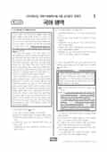

문제지

2026학년도 6월 모의평가 · 2025년 6월 시행
2026학년도 6모 국어 화법과작문 1등급컷은 원점수 96점(추정), 표준점수 최고점은 137점입니다.
원점수 1등급컷은 공식 발표값이 아니라 EBSi·입시기관 값입니다. 등급별 값은 등급컷 표, 출처 구분은 데이터 원칙에 있습니다.

시험지를 먼저 풀어 보세요. 등급컷·표준점수·난이도는 흐리게 가려 뒀어요.
| 등급 | 원점수 | 표준점수 | 백분위 | 누적 |
|---|---|---|---|---|
| 1 | 96 | 130 | 96 | 4.92% |
| 2 | 90 | 124 | 88 | 12.34% |
| 3 | 82 | 117 | 77 | 23.99% |
| 4 | 72 | 108 | 60 | 40.9% |
| 5 | 58 | 96 | 39 | 61.32% |
| 6 | 43 | 83 | 23 | 77.81% |
| 7 | 28 | 70 | 11 | 89.95% |
| 8 | 21 | 65 | 5 | 96.12% |
등급별 컷 · 입시기관 3곳 원점수 추정 종합(이투스·종로학원·대성마이맥) · 공통+선택 점수 조합에 따라 다를 수 있음 · 만점 100점
정답 변경 없음
이의신청 8문항
시험 전체 관련 보도 4건은 2026학년도 6월 모의평가 회차 페이지에 모아 두었어요.
국어 영역 전체 응시자 기준입니다. 한국교육과정평가원이 교육부 보도자료로 공개한 표준점수 도수분포로 계산했습니다.
EBSi 응답자 기준으로 가장 많이 틀린 문항은 16번(2점)이고, 오답률은 69%입니다. 오답률 50%를 넘은 문항은 4개입니다.
| 순위 | 문항 | 배점 | 오답률 | 정답 | 많이 고른 오답 |
|---|---|---|---|---|---|
| 1 | 16번 | 2점 | 69% | ① | ④ 19.8% |
| 2 | 8번 | 3점 | 64.9% | ⑤ | ④ 25.3% |
| 3 | 7번 | 2점 | 53.6% | ④ | ① 26.5% |
| 4 | 17번 | 3점 | 52.8% | ② | ④ 19.9% |
| 5 | 12번 | 3점 | 49.8% | ④ | ⑤ 17.2% |
| 6 | 21번 | 3점 | 45.1% | ② | ④ 21.2% |
| 7 | 32번 | 2점 | 44% | ⑤ | ③ 19.5% |
| 8 | 40번 | 3점 | 43.5% | ③ | ④ 15.8% |
| 9 | 30번 | 3점 | 41.6% | ② | ③ 14.3% |
| 10 | 24번 | 2점 | 40.4% | ④ | ② 19.4% |
| 11 | 36번 | 2점 | 38.2% | ④ | ③ 15.6% |
| 12 | 20번 | 2점 | 37.7% | ② | ③ 19.3% |
| 13 | 25번 | 2점 | 37% | ② | ⑤ 14.4% |
| 14 | 6번 | 2점 | 34% | ④ | ② 12% |
| 15 | 31번 | 2점 | 32% | ③ | ① 17.8% |
EBSi 가채점 응답자 기준 · 전 문항 중 오답률 상위 15문항
출처: EBSi 역대 등급컷·오답률 공개 화면. 가채점에 참여한 EBSi 이용자 응답이라 전체 응시자 정답률과는 다를 수 있습니다.
발행 기관: 한국교육과정평가원(KICE). 파일 위치: 이 사이트가 보관한 사본. 저작권은 발행 기관에 있습니다. 원본과 다르거나 게시 중단이 필요하면 연락처로 알려 주세요. 등급컷 출처 구분은 데이터 원칙에서 설명합니다.
막대 색은 역대 대비 난이도 · 진한 막대가 이 시험 · 막대를 누르면 그 회차로 이동
공통과목 독서는 표기가 같고 의미가 다른 동형이의어를 읽기에서 해결하는 방법을 다룬 독서론(1~3번), (가) 시민의 자유를 최대한 보장하려던 근대의 자유주의적 법 모델과 (나) 주택·상가 임대차 보호 법률을 묶은 법 지문(4~9번), 수소의 생산·저장·운송·추출 과정을 다룬 기술 지문(10~13번), 인간을 정보적 존재로 보는 플로리디의 정보 철학을 다룬 인문 지문(14~17번)으로 구성되었습니다.
플로리디 지문의 16번(2점, 69.0%)은 인간중심주의, 뉴턴, 생명 중심 윤리학의 입장과 플로리디의 입장이 상충하는지 판단하는 문항으로 화법과 작문 응시자 기준 오답률 1위였습니다. 법 지문의 8번(64.9%)은 주택과 상가 임대차의 최단 존속 기간과 갱신 요구, 분쟁 조정 절차를 <보기> 사례에 적용하는 문항이었습니다.
문학은 이범선의 현대소설 「표구된 휴지」(18~21번), 가사 「동유가」와 이태준의 수필 「해촌 일지」를 묶은 복합 세트(22~26번), 고전소설 「김진옥전」(27~30번), 황동규 「살구꽃과 한때」와 신석정 「역사」를 묶은 현대시 세트(31~34번)로 구성되었습니다. 입시기관들은 문학이 지난해 수능보다 쉬웠다고 평가했습니다.
화법과 작문은 동물 키우기에 관한 설문 결과를 활용한 주제 발표(35~37번), '인증 숏' 현상을 다룬 비평문과 이를 바탕으로 한 시사 비평 동아리 면접(38~42번), 미식 관광을 소개하는 교지 초고(43~45번)로 구성되었습니다. 발표에서 이전에 보기 어려웠던 도표 해석 문항이 나와 체감 난도를 높였다는 분석이 있었습니다.
화법과 작문 응시자 기준 오답률 50%를 넘은 문항은 4개뿐이었고, 오답률 상위 문항은 대부분 공통 독서에 몰렸습니다.
이 회차는 쉬운 시험이었지만, 16번처럼 여러 입장 사이의 '상충' 여부를 판단하는 문항에서 오답률이 높았습니다. 지문에 나온 각 입장의 핵심 전제를 한 줄씩 정리한 뒤 선지와 대조하는 연습을 해 두면, 같은 해 9월과 수능처럼 어려워진 시험에서도 대응할 수 있습니다. 시험 전체 흐름은 이 회차의 회차 해설에 정리했습니다.